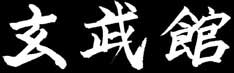
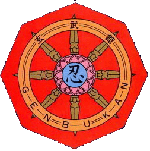

Genbukan
The Genbukan was established on November 28th, 1984 by Grandmaster Shoto Tanemura Sensei. The name 'Genbukan' means the place that nurtures the martial art professionals (Kuroto): the place radiating with an exquisite martial art. 'Gen' also means black - a place of practice for techniques which are mysterious, strange and marvellous. The significance is that the one who masters the Ninpo Bugei gives light to the (outer) world of darkness.
The Symbolism of the Genbukan Emblem
The Buddist indomitable sacred wheel, the eight-spoked Chakra (Horin), is the symbol of the Genbukan. The Chakra was originally an ancient weapon of India, later adopted for rituals in Tantric Buddhism. It symbolises the destruction of evil and all that comes in the way of Dharma, which is the law and order of the universe. In the centre is a sacred mirror manifesting the oneness of the divine spirit and soul. With the character for perseverance 'Nin' is expressed the desire to attain this oneness.
The Lotus petals, surrounding the mirror, signify that however 'muddy' the environment is we keep our hearts pure and blossom out of the dirt and mire.
With sacred swords facing the eight cardinal directions evil cannot find its way to cause harm against us. Believing that ultimately the martial way and the way of Buddha is one and the same Tanemura Sensei established this emblem for the Genbukan to emanate the infinite light of the noble wheel.
Origins of the Genbukan
The Genbukan was created from many schools; some more than 1000 years old, by Grandmaster Shoto Tanemura Sensei, the present World Ninpo Bugei Federation President. Genbukan Ninpo is not limited to any one style (Ryu) the Genbukan basics come from various Ryu ha, including:
- Togakure Ryu
- Kumogakure Ryu
- Kukishin Ryu
- Gyokko Ryu
- Gyokushin Ryu
- Koto Ryu
- Takagi Ryu
- Gikan Ryu
Within these Ryu you can find eighteen traditional topics of study, the "Bugei Juhappan". There have been many different versions of the bugei juhappan, reflecting the differing needs of the time. The following list has been suggested as a fairly stable core account.
- Taijutsu Unarmed fighting
- Kenjutsu Sword techniques
- Bojutsu Staff fighting
- Shurikenjutsu Blade throwing techniques
- Kyujutsu Archery
- Sojutsu Spear techniques
- Naginatajutsu Halberd fighting
- Kusarigamajutsu Sickle and chain
- Hensojutsu Disguises
- Shinobi iri Stealth and infiltration techniques
- Suiren Swimming
- Bo ryaku Strategy
- Juttejutsu Iron rod techniques
- Intonjutsu Escape and evasion
- Tenmon Meteorology
- Chimon Geography
- Bajutsu Horsemanship
- Hojojutsu Tying with ropes
These were the main subjects that a ninja had to master, but there were two that remained as the most important: 'Seishinteki Kyoyo' (Spiritual refinement), which involves the heart, spirit and soul; and Taijutsu (Unarmed defence), involving the body and the physical techniques. Both combined produce miraculous powers and gives the practitioner the 'Shin Gi Tai Icchi' (Heart, technique and body combination).